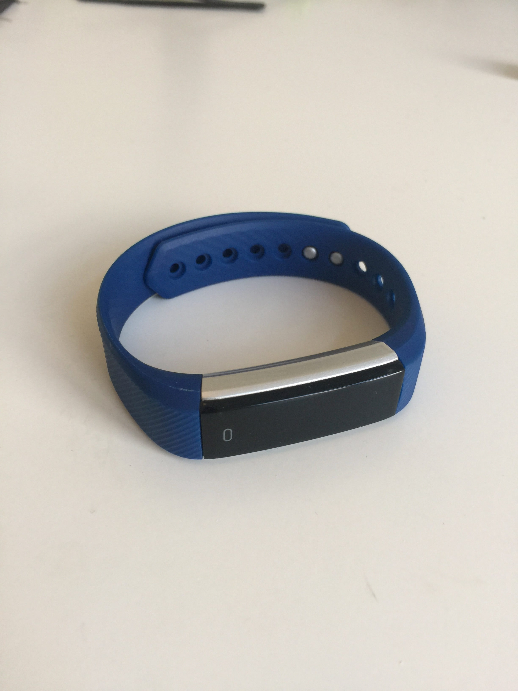
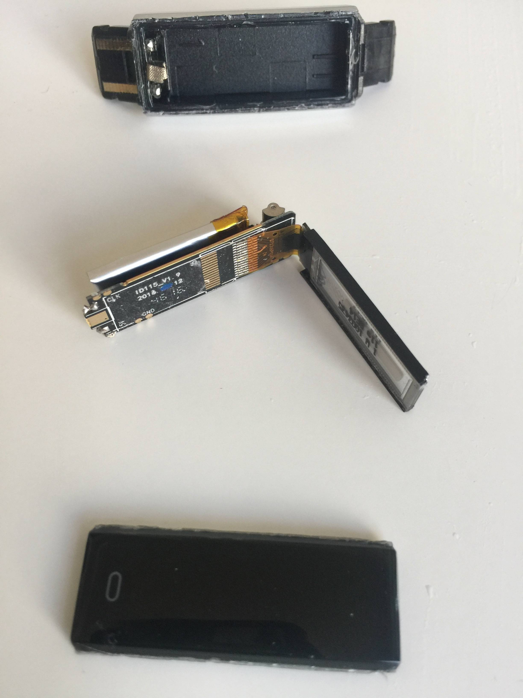
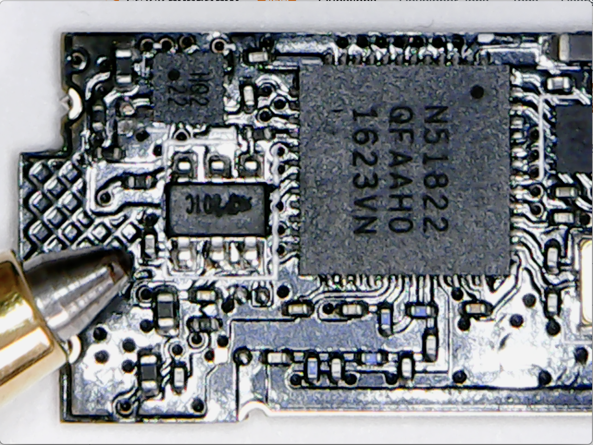
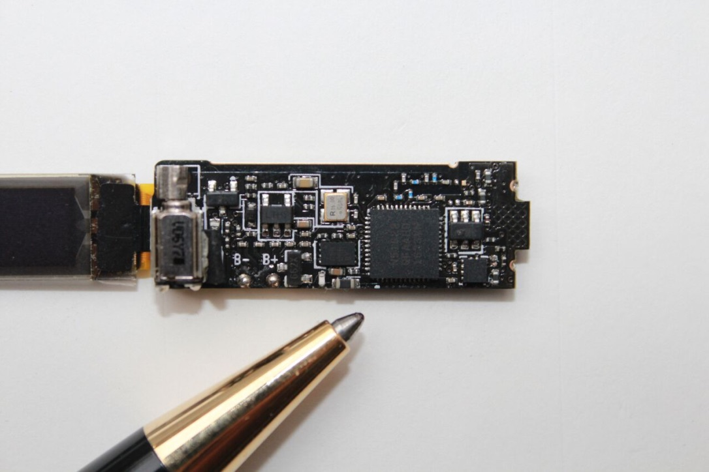
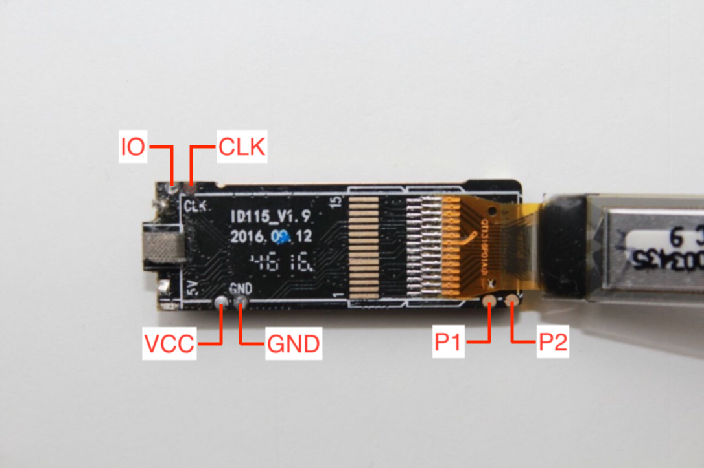
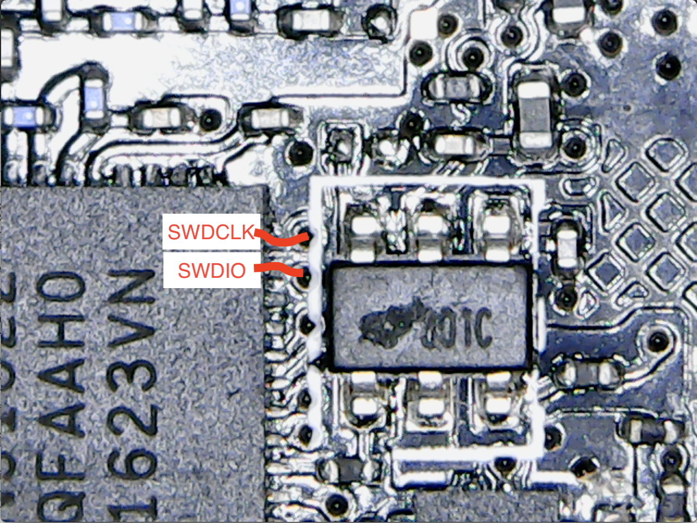
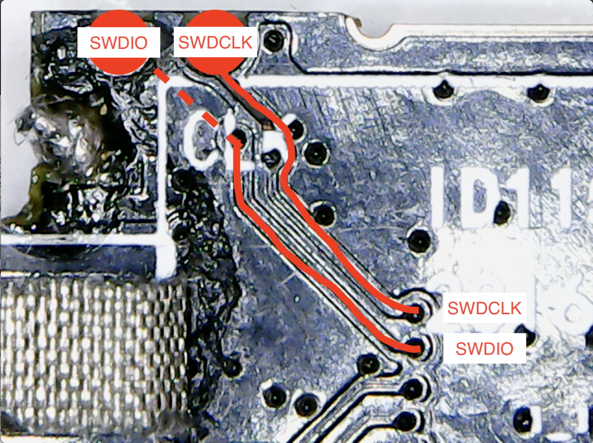

智能手环 Hacking 之旅
进入现在这个公司第一天上班的那天，有一大堆东西让我痴狂不已。在这堆东西中其中就包含一个可以自己定制的健康监测手环。从技术角度上来看，能随时随地监测健康状态真是太酷了。
- 很小的尺寸（大约 15mm x 40mm）
- 低功耗蓝牙（BLE）
- OLED 显示屏（96 x 32 像素）
- 可充电电池
- 支持USB 充电
- 加速度传感器
- 振动马达
- 价格在10 美元左右
在手环外面，除了背部印有“ FCC ID: 2AHFTID115 ”，就没了其他标识。搜索了一下，发现这个设备的名字是 ID115，另外还有些内部构造的图片。仔细观察可以看到那块最大的芯片上写着 “ N51822 ” ，这表明微控制器单元 (MCU) 很可能是 Nordic 的 nRF51822，一块支持低功耗蓝牙的 32 位 ARM Mo CPU。从理论上来讲，这可以编程实现手环现有功能以外的其他事情。


手环拆开前后
原文: Hacking a cheap fitness tracker bracelet
在拆卸它之前，我上谷歌搜索到了使用相同芯片类似的手环，不少人成功的拆开了手环。
拆开它其实并不容易，黑色的塑料盖子粘在了灰色的塑料后盖上。我用电吹风加热让胶水软化，然后用小刀小心翼翼的切开胶水，确保手环不会受到太大的伤害。拆开之后，我确认它确实使用的是 nRF51822。后来，我买了一个看似相似的手环，但是这个手环使用的是德州仪器的 MCU ,这个差异需要的特别注意。

nRF51822与圆珠笔大小对比
想办法和它说话
从手册上了得知，芯片上的串口调试 Serial Wire Debug(SWD) 的两个引脚可用于编程/调试。这意味着两件事，如果我们想和对话：
- 我们需要一个 “SWD programmer” (例如 segger的 J-Link调试探针)
- 我们需要访问 SDW 的两个引脚，即 SDWIO(数据) 和 SWDCLK(时钟)
幸运的是，板子上有不少裸露的垫片。他们的存在意味着需要进一步的调试/测试/验证。我想一定是有一个很酷的工程师预留着这些垫片，对于像我这样的人来说这简直就是给我们准备的礼物。不是所有的垫片都有标注，我根据我的猜测做了标注。


PCB 板子的正反面
使用一个廉价的 USB 显微镜,我拍了一些板子正反的照片，试着追踪从 MCU 到垫片的痕迹。


在板子的正反面追踪 SWDIO 和 SWDCLK
注意这是一个多层的 PCB, 在它的上面有通孔。所以我们需要追踪板子的正反两面。使用这些图片，我们可以追踪到SWDIO 和 SWDCLK 从芯片连接到了 IO 和 CLK 垫片。这也证实了板子上标注的 “CLK”的引脚 实际上是 SWDCLK。在它的右边的引脚是 SWDIO。我们可以得到第一个映射表。
| nRF51822 引脚 | 板子 | 描述 |
|---|---|---|
| SWDIO | IO | 数据引脚 |
| SWDCLK | CLK | 时钟引脚 |